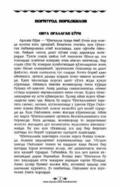

OOJufti Oqyolning izidan tushib xavfga duch kelgan boʻri Choʻngkalla haqida hayotiy qissa.
Normurod Norqobilovning ushbu asarida dashtda va ovul atroflarida kezuvchi boʻrilar hayoti hamda ularning ovchilar bilan toʻqnashuvi mahorat bilan tasvirlanadi. Qissada Choʻngkalla laqabli arloni boʻri va uning qopqonga tushgan jufti Oqyol bilan bogʻliq kechinmalar va hayvonot olamidagi murakkab voqealar aks ettirilgan.